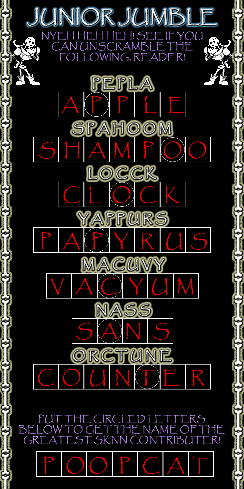

Episode 38: December 13th, 2019
Back to News Archive
| Back to Homepage | Back to Shef Werld<< Previous Episode | >> Next Episode

"Pepla Spahoom"
$5.00 | ~8 ghost dollars | ⭐25 coins
Does not include potential cost from surprise mechanics (they're not lootboxes so it's not illegal!!!), purchases from Shef Kerbi's Apparel or preordering the Special Edition
-------------------------
ANNOUNMENT
The SKNN Training Program II has begun and will run for the next 2 weeks! This is your chance to easily join in with the rest of the SKNN Team in creating news for the people of Dreem Lend!
PROTEST AGAINST THE LETTER ‘H’
For no reason, some random people protested outside the Dreem Lend Government Building, for the letter ‘H’ to be removed from the alphabet. Somehow, they fell into a room with lots of ‘H’s everywhere on the walls.
Keyn DDDD decided that the letter ‘H’ will not be removed from the alphabet.
APPLE'S TECHNOLOGY AND DESIGN CORNER: Episode 9
When the Google Stadia entered the console market, no one was buying. The same thing goes for the Xbox One X and PlayStation 4 though. Generally consoles aren't being purchased while they're releasing. The reason for this is unknown, though preorders might have something to say about it. I've also never seen a gender-neutral controller before. What the heck does that even mean? Is anyone buying the Stadia because it has gender-neutral controllers? Are they inevitably going to blame homophobia for the failure of their stupid always-online console? Why do they think players want always-online DRM!?
Oh yeah, I just remembered that they're Google.
In other news, the Tesla Cybertruck. And is the Ouya coming back this Christmas season? It's just as likely to be the Gizmondo.

YOU IS BAD NOW
You, a millionaire, has recently decided that he/she (gender is unknown since he/she wears a mask all the time) will be bad now. You has already done bad things, like donating to a charity that supports people that hate news networks. We contacted You and You responded with:
Turns out, donating to a bad charity isn't enough to get You in jail. Now You is bad and is poor. You can send You some money at his Patreon account (we weren't able to find a link)
UPDATE:
You has just mismarked one of his/her videos on YouTube as "For Kids," when in the video, it included content that was not for kids. Despicable!
PIECE OF CHEESE MISSING
A piece of cheese has disappeared from Carmes' house. There are rumours that it went on vacation to the local supermarket.
THE SUN VANISHED!
Recently, widespread confusion happened after there was no weather last issue, due to a lack of a sun and a moon to cause any weather. As it turns out, this was actually a demonstration of local business entrepreneur Keynsun DDDO's new service, Keynsun DDDO's Sun and Moon Removal Service, starting at $139.97 per sun removed and $179.96 per moon removed, with a special deal where you can get both removed for only $499.95. The service has not officially launched yet, but is already getting very positive reception
"Finally, people can stop calling me Sunburn Ern!" says Dreemlend resident Sunburn Ern, one such lover of Keynsun DDDO's Sun and Moon Removal Service says.
"I've been looking for a way to skip past Mistah Shein and Mistah Bereht for years," Bob Speedrunners, world record holder in the OwnACopyOfKerbisAdventar% category, says, "But with this new service, I'll finally be able to skip them and hold all the world records for Kerbi's Adventar!"
So far, no negative drawbacks have been found from removing either of them, other than them being brought back out of nowhere so that they can give this bulletin weather.
VEILED VOLITANT VOLUME UNVEILED UPON UPPER ATMOSPHERE (ANSWERS!)
Turns out it was the moon. Have you ever tried closing one eye and looking at the moon, then closing the other? It sort of shifts a bit both times. Why are these two moons hidden in the moon, and what is the government hiding from us? Find out never lol

GOD GETS NUCLEAR REVENGE ON SANDWICH SHOP
The grand opening of the epic sandwich building in the area of the intersection of Broadway and King Street in Burlington has been postponed due to nookyulihr waste raining from the sky. On the other hand, the builders are very excited to get back to work to try their weird and cool new limbs. Construction will be resumed on ██/██/20██.
SHEF KERBI'S EVIL TWIN ON THE RUN
Shef Kerbi's evil twin, Baika Kerbi has been put on a wanted poster. It is not Shef Kerbi on it, as Baika is evil, but Shef is not.
Baika Kerbi has been doing the following crimes:
* Starting a company that makes pollution
* Throwing green paint at Keyn DDDD and his new assistant
* Smashing Keyn DDDD's clock and releasing all the clock dust there
* Releasing loads of glitch Pokemon into several towns
* Claiming that the sun is underground
* Not following new trends
* Flipping a table with a bowl of mouldy rice and beans on it outside the Dreem Lend Hygeen Inspectors headquarters
Here is the wanted poster for him:

Now I don't wanna give my own opionion but...
OPIONION WITH SHEF KERBI
BANE STARBUCKLE IS NOT AVAILABLE AT THE MOMENT. PLEASE WAIT UNTIL AFTER THE BEEP
So we told you Shef Kerbi News Network fans on our Scratch page that you could post anything with the #SKNN hashtag and you could end up in our paper! In this episode, we'll respond to some of your feedback with the new SKNN format, as well as show some of your cool stuff!
We began this issue's section with
"goodnight girl i'll see ya tomorrow"
And here were your responses:
Bob Bright wrote:
"Dear SKNN,
I hear that Keynsun DDDO removed the sun and moon from the sky. As he works here, can you tell him to put them back? I hear it's hard to buy a newspaper when you're frozen. So, you might be interested in bringing the sun back.
From Bob Bright"
Keynsun DDDO responded with:
"The way the sun and the moon works is that they make the temperature. if there's no sun or moon then theirs no temperature so you can't freeze so don't Worry. that's just how it works Yes i am a certified sun and moon researcher with a degree in sun ad moon researching so you can 100% trust me.
if anything you should be worried about if there was a sun and a moon our 100% certified weatherman certifies everyone the sun and moon is making it freezing for this legitiment bulliten"
----------------
COMIX
by Apple the Cat
Candy Sadness #21

ACTIVTY

WEATHER
Hey guys it's December that means irregardless of the previous weather it is now cold!
Max of 2, min of -17 today, chance of snow. Tomorrow is max 4, min of -16. Bit windy as well.
THANK YOU FOR WATCH. PLEASE TUN E IN NEXT TIME FOR MORE NESW

Shef Kerbi News Network follows the guidelines and conventions set by the 1984 High Quality News Act of Dreem Lend, which states
that any news published is to be of a high quality, is to remain unbiased and to show all sides of a news report, does not attack anyone, and protects the privacy
of people whose identities don't want to be revealed.
If you would like to file a complaint regarding content use, please message SKNN through our Scratch account. We also have a Twitter and Instagram account if you
prefer.
Shef Kerbi News Network respects the ancestors of Cappy Town, and understands that they are the reason why Dreem Lend exists.
Shef Kerbi News Network is proud to be a subsidiary of Shef Werld
this website is best viewed with Ned's Escape